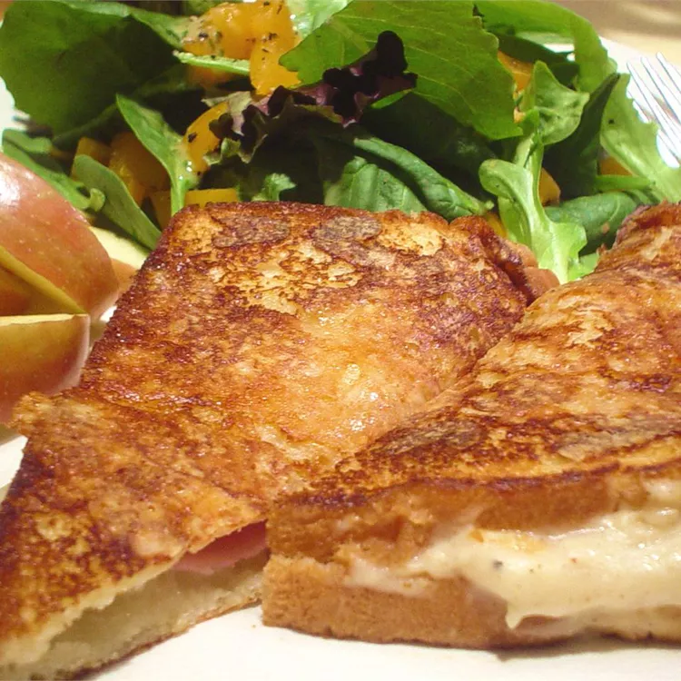

Croque monsieur

Description
This is a wonderful battered then fried croque monsieur sandwich makes a
great lunch with a tossed salad.
Ingredients
- 4 tablespoons softened butter, divided
- 6 slices white bread
- 21 tablespoon Dijon mustard
- 12 slices thin deli ham
- 2 tablespoons mayonnaise
- 6 slices Swiss cheese
- 4 tablespoons all-purpose flour
- ½ teaspoon baking powder
- ¼ teaspoon salt
- 2 eggs
- ¼ cup water
- 1 tablespoon vegetable oil
Steps
-
Use 2 tablespoons of the butter and spread evenly on one side of each
slice of bread. On three of the slices, spread a layer of Dijon mustard
over the butter, and top each with 4 slices of ham. On the other three,
spread mayonnaise over the butter, and top each one with 2 slices of
Swiss cheese. Press ham and cheese sides of sandwiches together.
-
In a flat-bottom dish, whisk together the flour, baking powder, salt,
eggs, and water until blended. Set aside.
-
Heat remaining butter and vegetable oil in a large skillet over medium
heat. Dip both sides of each sandwich in the egg mixture, and fry in the
oil and butter until browned, flipping to brown on each side.
Home